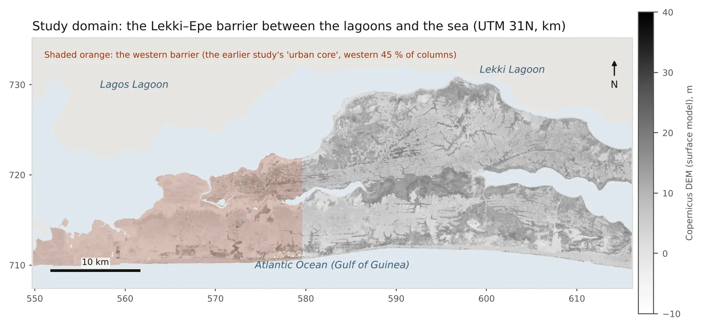
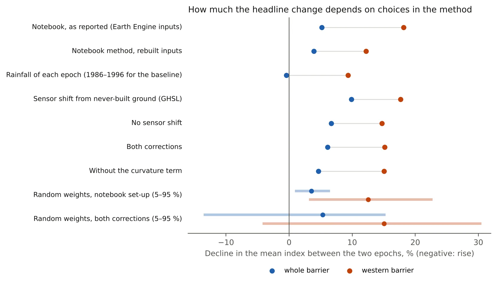
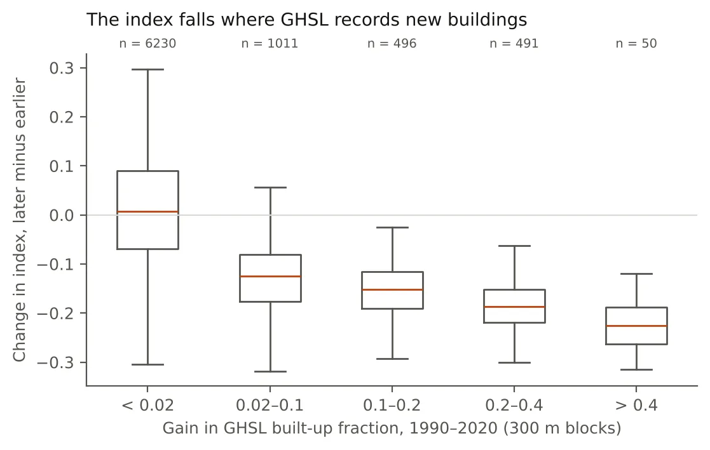
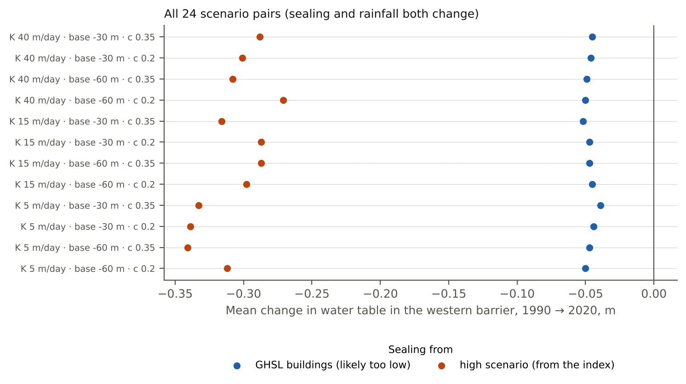

Urban sealing and the shallow water table of the Lekki–Epe barrier, Lagos, 1986–2024
David OloyedeNovember 2026
Abstract
We ask how much of the land surface of the Lekki–Epe barrier in Lagos has been sealed since the late 1980s, how reliable the satellite evidence for that is, and what the sealing could do to the shallow water table beneath it. We rebuild, from open data, a recharge-potential index that an earlier version of this study computed from Landsat-5 (1986–1996) and Sentinel-2 (2023–2024) imagery, test how its change depends on each choice in its construction, compare it with the Global Human Settlement Layer (GHSL) built-up record, and run a steady-state MODFLOW 6 model of the barrier as a set of scenarios. The index falls by 3.9 % over the barrier and 12.2 % in its western part. The western decline appears under every one-at-a-time change to the method we tested and in 91 % of 2,000 random weightings, but its size ranges from −4.2 % to 30.5 % across weightings, and the barrier-wide change reverses sign when each epoch is given its own rainfall. The index declines more where GHSL records more new buildings (Spearman ρ −0.67, 95 % interval −0.72 to −0.61). In the model, sealing alone lowers the mean water table in the western barrier by 5–6 cm with sealing taken from GHSL buildings and by 28–35 cm in a high scenario taken from the satellite index, which measures a change in the NDBI built-up index, not a sealed area; wetter years in 2019–2023 offset part of this. The size of the response is set mainly by how the model lets groundwater seep out at the surface: without that outlet the fall is 8–15 times larger, but the water table then stands above the ground in most of the barrier. No groundwater observations were available, so the model is not calibrated; its results are differences between scenarios.
Keywords: urban sealing; groundwater recharge; coastal aquifer; MODFLOW 6; Landsat; Sentinel-2; GHSL; Lagos
1. Introduction
Rain that falls on open sand soaks in and recharges a shallow water table; rain that falls on roofs and roads mostly runs off. Where a city spreads over a sandy coastal barrier, sealing the surface could therefore lower the water table, and with it the freshwater held above the sea. Testing this needs three things: a record of how much the surface has been sealed, an estimate of how much rain reaches the water table, and a description of how the aquifer moves water to the sea. In Lagos the first can come from satellites, the second only partly, and the third not at all from open data.
An earlier version of this study (Oloyede, 2026) combined five layers into a recharge-potential index with fixed weights, reported an 18.1 % loss of recharge across the barrier and more than 45 % in its “urban core”, and wrote, but did not run, a MODFLOW 6 model. An audit found that the notebook behind the report had printed 5.2 % for the barrier and 18.1 % for the urban core, so the report’s barrier-wide figure was the notebook’s urban-core value; that both were changes in an index, not in recharge; that the model files could not have run meaningfully (recharge in millimetres per year in a model set in metres and days, no boundary conditions, no hydraulic conductivity); and that the satellite export the notebook read had never been stored.
We ask three questions. How much has the surface been sealed, and how robust is the satellite evidence? Does it agree with a separate built-up record? And, under the range of aquifer properties and sealing estimates that cannot be ruled out, how much could the sealing move the water table?
2. Data and methods
2.1 Study area
The study area is the land of the Lekki–Epe barrier between the Lagos and Lekki lagoons and the Atlantic Ocean, inside the box 3.45–4.05° E, 6.40–6.65° N, on a 30 m grid in WGS 84 / UTM zone 31N: 769 km² of land. Following the earlier study, the western 45 % of the grid (222 km² of land) is used in comparisons. We call it the western barrier; the earlier study called it the urban core. It is a column cut, not a mapped urban boundary.

2.2 Data
Every input is read from open sources through Microsoft Planetary Computer (Microsoft Open Source et al., 2022) and rebuilt by a script (Section 6).
- Imagery. Landsat-5 TM Collection 2 Level 2 surface reflectance (Earth Resources Observation and Science Center, 2020), November–March 1986–1996: 29 scenes with clear pixels, cloud and shadow masked, combined as a per-band median. Sentinel-2 Level-2A surface reflectance (European Space Agency, 2022), November 2023–March 2024: 14 scenes, keeping pixels the scene classification labels as vegetation, bare ground, water or unclassified and removing cloud and shadow. From them we compute the normalised difference built-up index (NDBI; Zha et al., 2003) and the normalised difference vegetation index (NDVI; Tucker, 1979); a water index (MNDWI; Xu, 2006) is used only to separate land from water.
- Elevation. Copernicus DEM GLO-30 (European Space Agency & Airbus, 2022), a digital surface model that includes buildings and trees.
- Rainfall. CHIRPS v2.0, the Climate Hazards Group InfraRed Precipitation with Station data (Funk et al., 2015): mean annual totals for 1986–1996 (1,703 mm on the barrier) and 2019–2023 (1,741 mm).
- Built-up area. GHSL GHS-BUILT-S R2023A (Pesaresi, 2023): the built-up surface fraction of each 3-arc-second (about 90 m) cell in 1990 and 2020. GHSL uses a different algorithm from this study but partly the same Landsat archive, so agreement with it is a cross-check, not independent validation.
2.3 Recharge-potential index
The index is the earlier study’s weighted sum of five layers, each scaled to 0–1 between its 2nd and 98th percentiles: surface openness (1 − NDBI, called permeability in the earlier study; weight 0.30), slope (0.25), a surface-curvature term (0.20), rainfall (0.15) and vegetation (0.10). The curvature term is a smoothed negative Laplacian of the surface model; the earlier study called it a topographic wetness index, which it is not (Beven & Kirkby, 1979). To match the two sensors, the earlier study shifted the Landsat indices so that the eastern 30 % of the grid, assumed unchanged, showed no change.
We reproduce this method line by line on the rebuilt inputs and then change one choice at a time: the rainfall of each epoch instead of 2019–2023 for both; a sensor shift taken from cells GHSL maps as never built; no shift; and the curvature term removed. “Both corrections” means the first two together: each epoch’s own rainfall and the never-built sensor shift. Finally we draw 2,000 random weight sets from a flat Dirichlet distribution (all combinations of five weights summing to one equally likely) and apply them to the method with both corrections. The share of weight sets that show a decline describes the weight space, not a probability that the decline is real.
2.4 Groundwater model
We model the barrier as one unconfined sand layer with MODFLOW 6 (Langevin et al., 2017) built with FloPy (Bakker et al., 2016), steady state, on 150 m cells. Water cells next to the land are held at 0 m, which sets the lagoons and the sea at mean sea level and ignores tides and lagoon set-up; land at or below 0.5 m elevation is treated as water, so low swamps act as fixed-level outlets. Cells off the barrier are inactive. The top is the 10th percentile of the 30 m surface model in each cell, which reduces but does not remove the effect of buildings and trees. A drain at the top of every land cell lets water seep out where the water table reaches the ground, with conductance K·A/L (hydraulic conductivity K, cell area A, connection length L = 10 m). Recharge is c × P × (1 − s), with P the CHIRPS rainfall of the epoch, s the sealed fraction and c the share of rain on unsealed ground that reaches the water table.
The aquifer’s properties are not known to this study, so they are scenarios: hydraulic conductivity 5, 15 or 40 m per day, a flat base at −30 or −60 m, and c of 0.20 or 0.35. The sealed fraction is taken two ways. From GHSL buildings, which miss roads and paving and are likely too low: 3 % of the land in 1990 and 7 % in 2020. And, as a high scenario, from the index itself: s is one minus the scaled openness term (1 − NDBI after the 2–98 % stretch), which gives 29 % and 43 %. This is a relative index score taken at face value, not a measured fraction and not a strict bound. It puts the 1990 barrier at 29 % sealed against GHSL’s 3 %, and it also rises over bright bare sand and cleared land, so the high scenario is a scenario of NDBI change more than of sealing: it falls between the epochs in 34 % of model cells, and in 36 % its change is smaller than GHSL’s. Its “1990” and “2020” values come from the 1986–1996 and 2023–2024 composites.
Each of the 48 runs (12 parameter sets, 2 sealing estimates, 2 epochs) uses today’s terrain and today’s land and water masks, and each epoch’s own rainfall, so the comparison is today’s barrier with 1990 sealing and 1986–1996 rainfall against today’s barrier with 2020 sealing and 2019–2023 rainfall. To separate the two, every parameter set is run again for 1990 with 2019–2023 rainfall, so that only sealing changes. A second set of runs varies what the scenarios hold fixed: the drain connection length (1, 10 and 100 m), the drain elevation (at the top, 0.5 m and 1.0 m below it, never below 0 m) and how the top is taken from the surface model (2nd, 10th and 50th percentile). A third set tests the seepage drains themselves, for the reference parameters (K 15 m per day, base −30 m, c 0.35): without drains, and with connection lengths of 1,000 and 10,000 m, which bring the drain conductance down towards the transmissivity of a cell.
The solver, with the same settings, was checked against the Dupuit–Forchheimer solution for a strip of aquifer between two water bodies with uniform recharge (Bear, 1972): the largest head difference was 0.009 m. That test has no seepage drains and a thick saturated zone, so it checks the solver, not the seepage set-up.
2.5 What the model can and cannot say
No water levels, abstraction records, aquifer tests or salinity measurements were available, so the model cannot be calibrated or validated, and absolute heads are illustrative. Its results are the differences between scenarios. It has no variable-density flow and says nothing about the depth of salt water.
3. Results
3.1 The satellite evidence for sealing
Rebuilt with the earlier method, the index falls from a mean of 0.57 to 0.54: by 3.9 % over the barrier and 12.2 % in the western barrier, against 5.2 % and 18.1 % in the earlier notebook. The absolute level differs from the notebook’s (0.43) because the inputs differ. The terrain terms do not change between epochs, so they add the same amount to the mean in both, and the percentage change depends partly on the size of these constant terms. About 81 % of the change in the mean comes from the openness term.
The eastern reference zone did change: GHSL’s built-up fraction across it rose from 0.6 % in 1990 to 1.5 % in 2020.
3.2 How robust the change is
Giving each epoch its own rainfall turns the barrier-wide decline into a rise of 0.4 %, because 1986–1996 was drier, and leaves a decline of 9.3 % in the west. Taking the sensor shift from never-built ground gives declines of 9.9 % and 17.7 %; no shift gives 6.7 % and 14.7 %; removing the curvature term gives 4.7 % and 15.1 %. With both corrections, the declines are 6.1 % and 15.2 %. Across 2,000 random weight sets with both corrections, the western barrier declines in 91 % of sets and the whole barrier in 75 %; the western change runs from −4.2 % to 30.5 % (5th–95th percentile; negative values are rises).

The direction of the change in the west is consistent; its size is not, and the barrier-wide direction depends on the rainfall used.
3.3 Comparison with GHSL
Over 8,278 blocks of 300 m, the index (with both corrections) declines more where GHSL’s built-up fraction rose more: Spearman ρ −0.67, with a 95 % interval of −0.72 to −0.61 from a bootstrap that resamples 118 groups of 3 km so that neighbouring blocks stay together (Figure 4). GHSL’s built-up share of the western barrier rose from 9 % in 1990 to 17 % in 2020. The built-up index also reads bright bare ground as built: 59 km² scores as built-up in 2024 where GHSL maps no buildings, which includes bare sand, cleared land, roads and paving.

3.4 The water table
All 48 scenario runs converged, with a water-budget discrepancy below 0.01 % of inflow. Groundwater flows from the middle of the barrier to the lagoons and the sea (Figure 5); with fixed 0 m levels on every side and positive recharge this follows from the set-up, so it is not a finding about the barrier. The median depth of the water table below the model top is 1.2–4.4 m across scenarios. Water seeps out at the surface in 0.3–18 % of cells, and these cells take 16–80 % of the recharge; the rest reaches the lagoons and the sea.
From 1990 to 2020, with sealing and rainfall both changing, the mean water table in the western barrier falls by 4–5 cm with GHSL sealing and by 27–34 cm in the high scenario (Figure 6). Rainfall was 2 % higher in 2019–2023, which offsets part of the fall: with rainfall held at 2019–2023 in both epochs, sealing alone lowers the western water table by 5–6 cm (GHSL) and 28–35 cm (high scenario). Conductivity, aquifer thickness and the recharge share move the answer by at most 1 cm with GHSL sealing and 7 cm in the high scenario.
In the high scenario the largest fall in any cell is 0.8–3.7 m, and 26–32 % of cells rise. Most of these rises remain when rainfall is held fixed (22–28 % of cells), so they come mainly from cells where the index-based sealing falls between the epochs, not from the wetter years.

The seepage drains control the size of the response. In the reference scenario sealing and rainfall together lower the western water table by 5 cm (GHSL) and 32 cm (high scenario). Without drains the fall is 0.76 m and 2.7 m, but the water table then stands more than 5 cm above the ground in 79 % of cells with GHSL sealing, which is not a credible state for the barrier. Drain connection lengths of 1 to 100 m give almost the same result, because the drains are then far more conductive than the aquifer; lengths of 1,000 and 10,000 m give falls of 6–11 cm (GHSL) and 38–59 cm (high scenario). Varying the drain elevation and how the top is taken gives 4–6 cm and 26–38 cm, with 53–83 % of recharge seeping out.
4. Discussion
The satellite record supports one claim: sealing in the western barrier has increased since the late 1980s, and the change agrees with a separate built-up product. It does not support a precise percentage. The earlier figures came from an index whose size depends on its weights, on the rainfall used and on a sensor reference that turned out to have changed itself; reported as a recharge loss, they also implied a physical meaning the index never had.
The model shows why the water-table response cannot yet be sized. Where the water table is close to the ground, any extra rise is removed as seepage, so a fall in recharge lowers the water table less than it would in a deep aquifer. How strongly this happens depends on the drain conductance and on the true depth to water, and neither is known. With the drains as set here the western water table falls by centimetres (GHSL) or decimetres (high scenario); with much weaker drains it is up to about 2 times larger; without drains it is 8–15 times larger but physically implausible. Abstraction from private boreholes may affect heads in the west more than sealing does, and if it has lowered the water table below the ground, seepage would be smaller and the response to sealing larger than modelled; no data on abstraction were available to test this.
The modelled flow pattern, outwards from the middle of the barrier to the lagoons and the sea, follows from the barrier’s shape and the fixed water levels around it. It does not test the earlier study’s “percolation corridor” along the barrier, but that corridor, a least-cost path across the index, was never a groundwater flow path.
The main limits are these. There are no groundwater observations, so nothing in the model is checked against reality. Sealing is not measured: building footprints are too low, and the satellite index is a relative score that also reads bare ground as built. Recharge from soakaways, septic systems and leaking water pipes is not represented, and neither is abstraction. The surface model includes buildings and trees. Lagoon levels are set to mean sea level, and land at or below 0.5 m is treated as open water. The model is steady and has no salt water, so it cannot address saltwater intrusion.
5. Conclusions
Sealing in the western Lekki–Epe barrier has increased since the late 1980s, and the satellite evidence for that is consistent with GHSL, but its magnitude cannot be pinned down from an index of this kind. In a groundwater model run across the tested range of aquifer properties, sealing alone lowers the mean water table in the west by centimetres to a few decimetres, and the size of the response depends more on how seepage at the surface is represented than on the aquifer’s conductivity or thickness. Turning this into a hydrogeological result needs water-level observations, aquifer tests, abstraction estimates and an estimate of urban return flows, and, before anything is said about salt water, salinity data and a variable-density model.
Key terms
- Water table
- The level below which the ground is full of water. Wells draw from below it.
- Recharge
- Water that soaks down to the water table and refills the aquifer. Roofs and roads reduce it, which is why sealing matters; leaking pipes and septic systems can add some back, and this study did not measure them.
- Sealing
- Covering the ground with roofs, roads and paving. The sealed fraction is the share of a cell that is covered.
- NDBI
- Normalised difference built-up index, from satellite images. It is higher over roofs and roads, but also over bright bare sand.
- Recharge-potential index
- A weighted score from 0 to 1, built from five layers. It is a relative score, not a measure of recharge.
- GHSL
- Global Human Settlement Layer, a built-up map from the European Commission. It is used as a second check, but it is not fully independent: it is partly made from the same Landsat archive.
- MODFLOW 6
- A groundwater flow model from the US Geological Survey. Here it is run as a set of scenarios, because no water levels were available to calibrate it.
- Seepage
- Groundwater leaving at the surface where the water table reaches the ground. In the model, drains remove this water; when recharge falls, less water seeps out, so the water table falls less. This setting controls the size of the modelled fall.
- Hydraulic conductivity
- How easily water moves through the sand. Tested at 5, 15 and 40 m per day.
- Western barrier
- The western 45 % of the study grid, used for comparisons. The earlier study called it the urban core.
Data, code and citation
Every number in this paper is read from
outputs/index_results.json,
outputs/modflow_results.json,
outputs/structure_sensitivity.json,
outputs/attribution.json and
outputs/modflow_heads.npz by
code/pipeline/p06_build_paper.py, which stops if a
statement in the text is no longer true. The scripts in
code/pipeline/ rebuild every input from open data
(p01), the index and its sensitivity (p02),
the groundwater model (p03, p03b,
p03c, checked by test_mf6_dupuit.py) and the
figures (p04). The earlier notebook, figures and report are
kept in the repository as the record of the first version.
- index_results.jsonIndex, its sensitivity and the GHSL check
- modflow_results.jsonAll 48 groundwater model runs
- attribution.jsonSealing alone, and the seepage tests
- structure_sensitivity.jsonDrain and model-top tests
- Paper (Word)Same text, for printing or comment
- RepositoryScripts, tests and the audit record
- Original report, October 2026 (PDF)Superseded
How to cite
Oloyede, D. O. (2026). Urban sealing and the shallow water table of the Lekki–Epe barrier, Lagos, 1986–2024. https://github.com/oloyededavid/Coastal-Hydrogeology-Modeling
A note from me
Thank you for reading. The first version of this study reported an 18.1 % loss of recharge on the barrier. When I traced that number, I found it was the change in an index, not in recharge; the notebook behind it had printed 5.2 % for the barrier, and 18.1 % was its value for the western part; and the groundwater model I had written had never run. This page is the rebuild: the same index made from open data and tested one choice at a time, and a model that runs.
The model taught me the most. In the model, how far the water table falls depends less on the aquifer than on how water seeps out at the surface, and I have no measurements to pin that down. So the answer here is a range of scenarios, not a forecast.
If you have water-level records from Lekki or Epe, or see something I missed, I would like to hear it: open an issue on the repository.
David
Was this research useful?
One reaction per browser. Counts are anonymous and kept by a public counter.
References
- Bakker, M., Post, V., Langevin, C. D., Hughes, J. D., White, J. T., Starn, J. J., & Fienen, M. N. (2016). Scripting MODFLOW model development using Python and FloPy. Groundwater, 54(5), 733–739. doi:10.1111/gwat.12413
- Bear, J. (1972). Dynamics of fluids in porous media. American Elsevier.
- Beven, K. J., & Kirkby, M. J. (1979). A physically based, variable contributing area model of basin hydrology. Hydrological Sciences Bulletin, 24(1), 43–69. doi:10.1080/02626667909491834
- Earth Resources Observation and Science Center. (2020). Landsat 4–5 Thematic Mapper Level-2, Collection 2 [Data set]. U.S. Geological Survey. doi:10.5066/P9IAXOVV
- European Space Agency & Airbus. (2022). Copernicus DEM [Data set]. European Space Agency. doi:10.5270/ESA-c5d3d65
- European Space Agency. (2022). Sentinel-2 MSI Level-2A BOA reflectance [Data set]. doi:10.5270/S2_-znk9xsj
- Funk, C., Peterson, P., Landsfeld, M., Pedreros, D., Verdin, J., Shukla, S., Husak, G., Rowland, J., Harrison, L., Hoell, A., & Michaelsen, J. (2015). The climate hazards infrared precipitation with stations—a new environmental record for monitoring extremes. Scientific Data, 2, Article 150066. doi:10.1038/sdata.2015.66
- Langevin, C. D., Hughes, J. D., Banta, E. R., Niswonger, R. G., Panday, S., & Provost, A. M. (2017). Documentation for the MODFLOW 6 groundwater flow model (Techniques and Methods 6-A55). U.S. Geological Survey. doi:10.3133/tm6A55
- Microsoft Open Source, McFarland, M., Emanuele, R., Morris, D., & Augspurger, T. (2022). microsoft/PlanetaryComputer: October 2022 [Computer software]. Zenodo. doi:10.5281/zenodo.7261897
- Oloyede, D. (2026). A multi-decadal assessment of recharge attenuation and subsurface percolation impedance in coastal aquifers: A cloud-native Earth observation and numerical workflow in the Lekki-Epe basin, Lagos, Nigeria [Unpublished report, superseded].
documents/Lekki_Coastal_Aquifer_Recharge_Report.pdfin this repository. - Pesaresi, M. (2023). GHS-BUILT-S R2023A - GHS built-up surface grid, derived from Sentinel2 composite and Landsat, multitemporal (1975–2030) [Data set]. European Commission, Joint Research Centre. doi:10.2905/9F06F36F-4B11-47EC-ABB0-4F8B7B1D72EA
- Tucker, C. J. (1979). Red and photographic infrared linear combinations for monitoring vegetation. Remote Sensing of Environment, 8(2), 127–150. doi:10.1016/0034-4257(79)90013-0
- Xu, H. (2006). Modification of normalised difference water index (NDWI) to enhance open water features in remotely sensed imagery. International Journal of Remote Sensing, 27(14), 3025–3033. doi:10.1080/01431160600589179
- Zha, Y., Gao, J., & Ni, S. (2003). Use of normalized difference built-up index in automatically mapping urban areas from TM imagery. International Journal of Remote Sensing, 24(3), 583–594. doi:10.1080/01431160304987